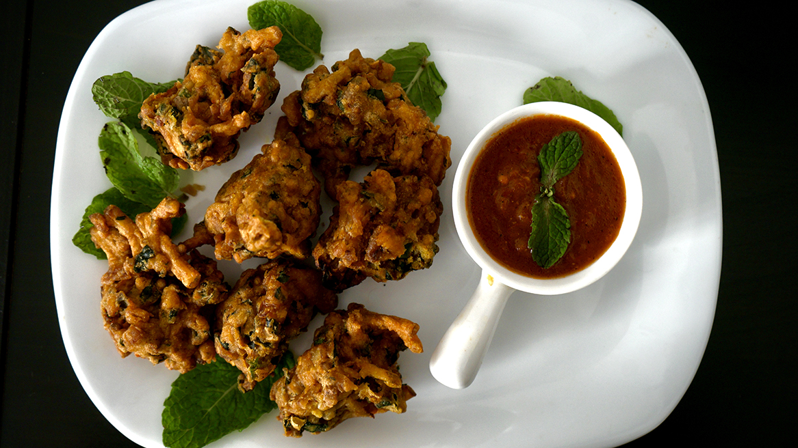

Connecting Cultures Through Food
Aloo Pakora


- 
Ingredients
- 1 gran patata pelat i cúbic
- 1 tassa de farina de Cigró
- 1 cullerada de maizena
- 1 culleradeta de pols de bitxo vermell
- 2 culleradetes de coriandre en pols
- 2 grans talls de ceba prima
- 1 culleradeta de comí en pols
- 1 culleradeta de cúrcuma en pols
- Masala en pols 1 cullerada
- Sal al gust
- Oli a fregida
Preparació
- Agafa tots els ingredients d’un bol excepte l’oli i barreja bé. Afegiu-hi l’aigua lentament i feu una bafarada gruixuda. Mantenir el batedor a part durant 15 minuts.
- Ara fes servir una cullera per deixar anar una petita quantitat de banderí a l’oli calent. Fry fins a l’or i el crispat.
- Drenar i servir.